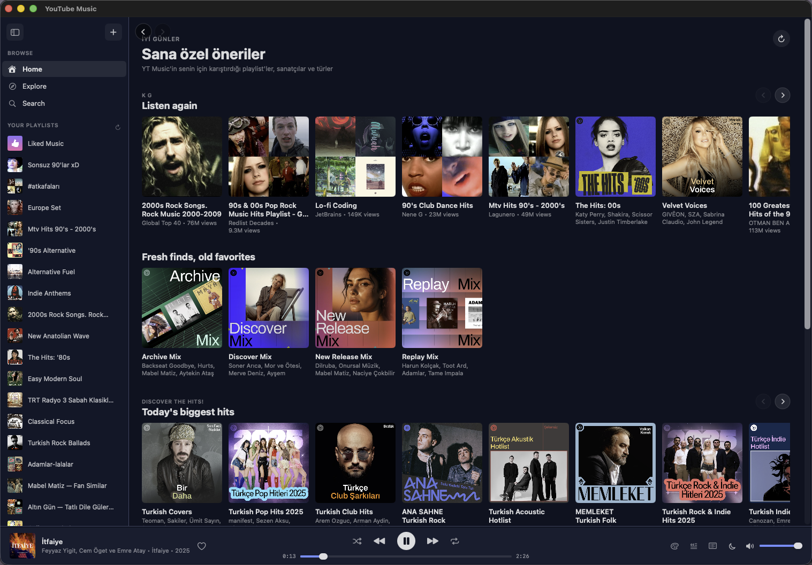
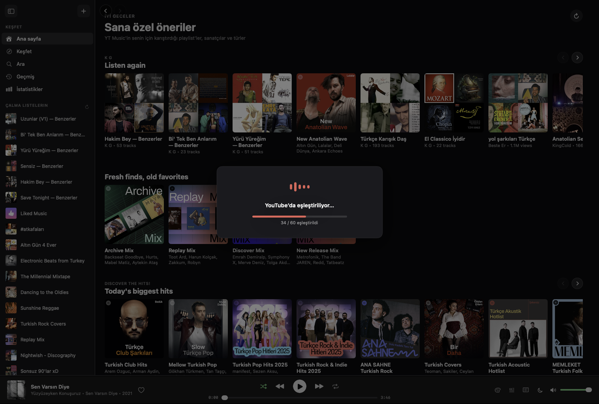
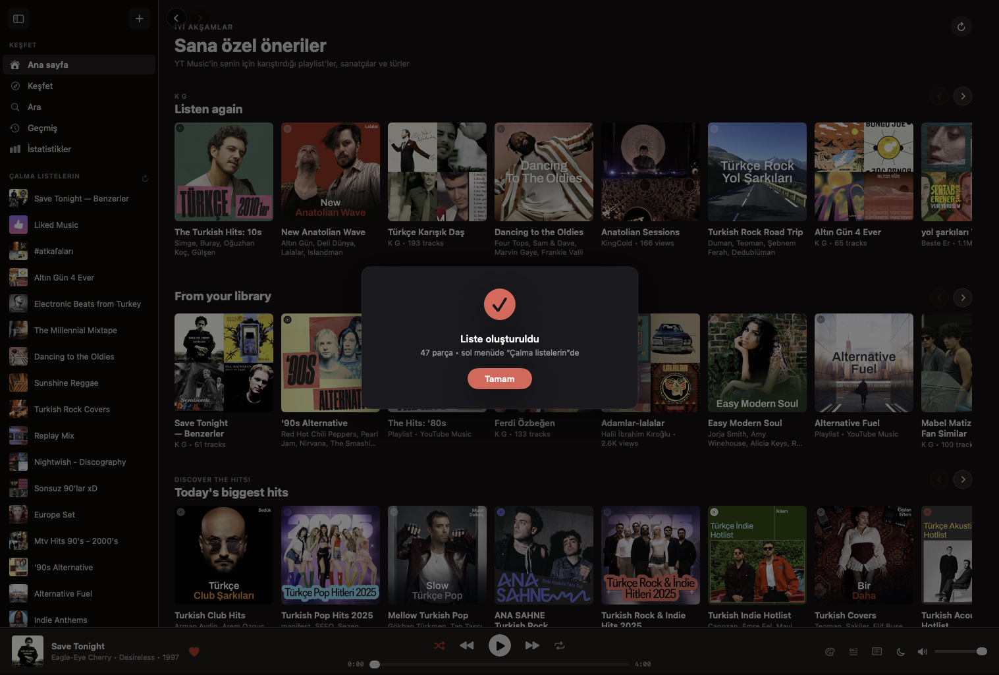
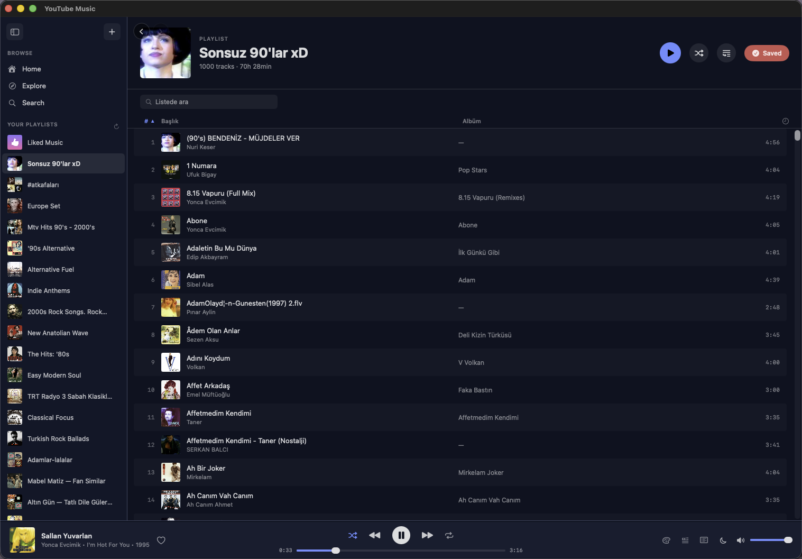
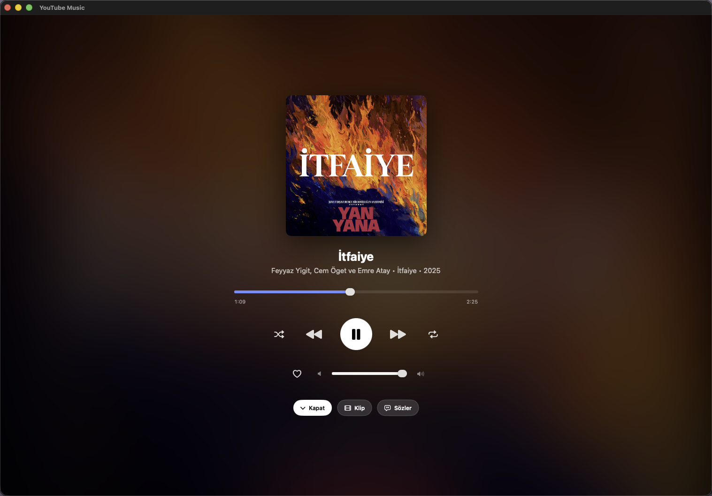
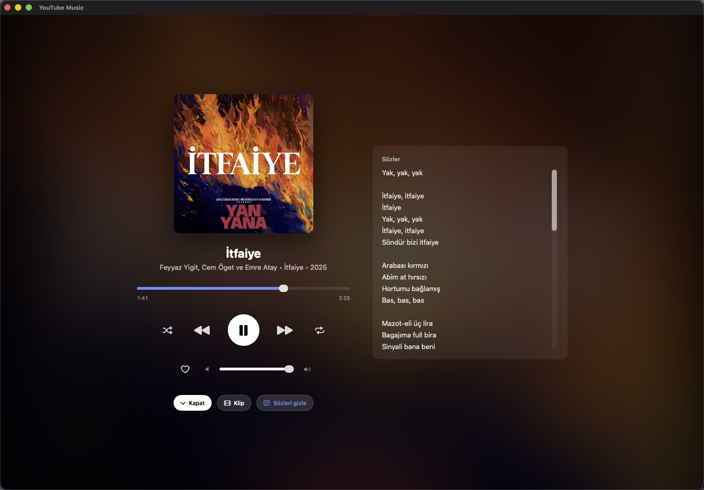
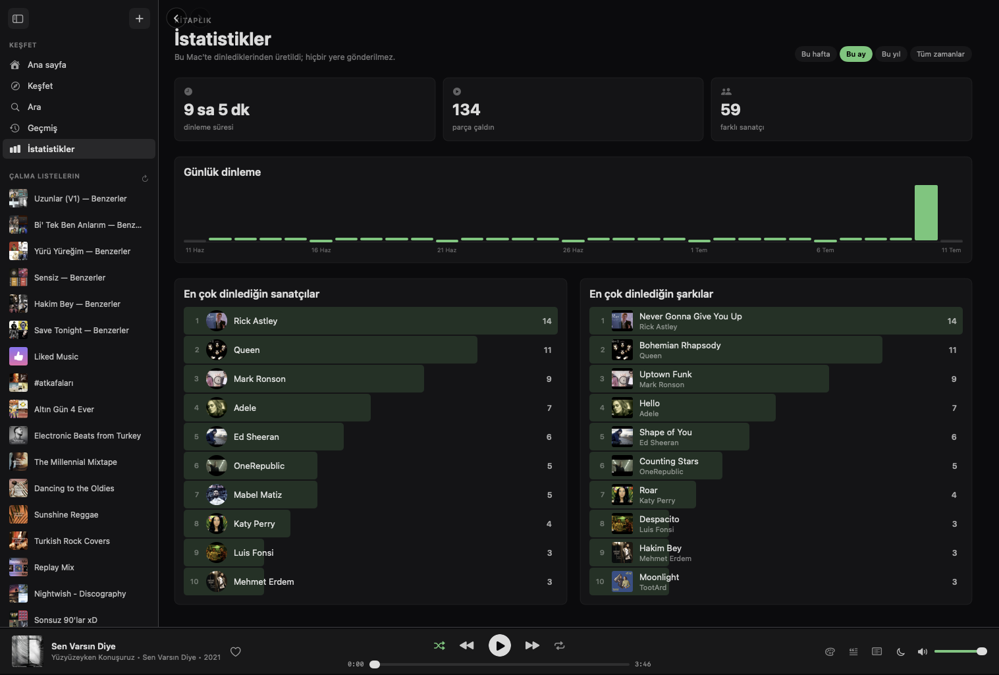
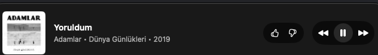

A fast, native shell around YouTube Music with all the OS integrations Google never shipped — media keys, Now Playing, a mini player, lyrics, a full native UI, themes, crossfade and one-click similar-song playlists. In a 5 MB app instead of a 500 MB browser tab.

Right-click a track, pick “Create similar playlist,” and you get a real, saved playlist of songs like it — without switching apps, tabs or windows.
It reads Last.fm's community-driven “similar tracks,” finds each one on YouTube Music, and builds the list for you — then saves it as a permanent playlist you can keep, play and sync everywhere.

The finished playlist appears in your library instantly, ready to play — no page reload, no waiting for it to sync back. Keep it, rename it, share it, or build another from the next song that's stuck in your head.

YouTube Music has no desktop app on any platform. This one adds the native integrations you actually miss — and stays out of your way.
Right-click any song and build a permanent playlist of tracks like it — Last.fm recommendations matched on YouTube Music and saved to your library, without ever leaving the app.
F7/F8/F9, AirPods double-tap, Control Center and the lock screen all control playback — with live artwork — even when the app is in the background.
An optional SwiftUI shell over the web player: sidebar, home, playlists, albums, artist pages, search and a native now-playing screen — the web chrome gone entirely.
An always-on-top, resizable window with artwork, title, like/dislike and transport controls. Tuck it in a corner while you work.
Time-synced lyrics pulled straight through YouTube Music, shown in the native now-playing screen or a slide-out panel next to the queue.
Fade out and pause after 5, 15, 30 or 60 minutes — or at the end of the current track. Perfect for falling asleep to a playlist.
Smoothly fade the tail of one track into the head of the next, with an adjustable duration — so playlists flow without a gap of silence.
Swap the whole app between hand-tuned color themes, light and dark — the native shell and player restyle instantly to match.
Jump to search or the mini player from anywhere, and glance at what's playing from a menu-bar item — with transport controls in the dropdown.
“Add to queue” and “Play next” actually work — a real ordered queue on top of YouTube Music, plus optional always-shuffle and track-change notifications.
Every pixel is native SwiftUI over the YouTube Music engine — so your library, recommendations and playback stay exactly as you know them.
Listen-again rows, mixes and today’s hits in a clean, fast native grid — no web page reflow, no wasted chrome.
A Spotify-style detail view with a sortable, searchable track list — comfortable even at a thousand tracks. Play, shuffle or queue the whole thing in a click.

Full-bleed album art with an ambient glow drawn from the cover, a big scrubber and all your transport controls — with lyrics one tap away.

Lyrics fetched straight through YouTube Music, laid out beside the artwork so you never leave the now-playing view.

A Statistics tab keeps its own local history and turns it into the numbers Google hides — your top artists and tracks over a week, month, year or all time, plus a daily listening chart. It all stays on your Mac and is sent nowhere.

A compact, always-on-top window for when the full app is overkill.

Drive the whole thing without touching the mouse.
Free, open source, ~2 MB download. macOS 13 or newer, Apple Silicon & Intel.
Drag YTMusic into your Applications folder.
It isn’t notarized yet, so right-click the app and choose Open to get past Gatekeeper once.
Log in with your Google password (passkeys need a browser entitlement). It stays logged in after that.
Prefer to build it yourself? git clone the repo and run ./build.sh — it takes about a minute and needs only the Xcode Command Line Tools.